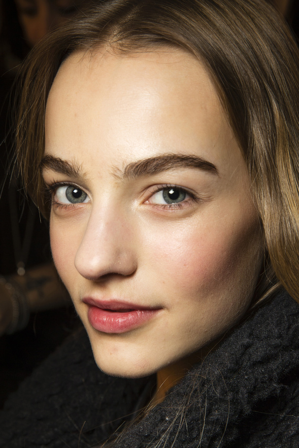

無妝感的裸妝趨勢近年來蔚為風潮，要打造出這種彷彿沒化妝一樣的妝容，最簡單的方式就是捨棄掉眼線了。然而，一般女生通常都十分依賴眼線，認為需要眼線才能夠讓自己看起來更有精神，但其實要突顯五官還有很多其他方法，在只要注意下面３大守則，就算不畫眼線也能讓你神采奕奕！
有眼線強迫症的人，在化妝時略過這道手續只會讓她們坐立難安。彩妝師Claire Thompson建議不如使用米白色眼線筆代替原本的黑色眼線，不但能減輕症頭，還能勾勒出眼睛框線，讓輪廓更立體。假如你習慣帶角膜變色片，不同眼珠顏色配上這種白色眼妝也會有不同的感覺，不管是藍色、棕色，或是綠色的眼睛，都別有一番風味。
想戒掉眼線上癮症還有一個方法，把畫眼線的時間拿來好好畫眉毛！整理好眉毛也會使你雙眸更加有神，彩妝師Claire Thompson建議利用眉刷將眉毛稍微逆向梳澎，比起很服貼的眉毛會更有精神。
充滿光澤的肌膚能夠讓你的整張臉都散發自信與魅力的光采！使用粉底或是滋潤霜打底後，再用霜狀的打亮產品將部分肌膚打亮，當你擁有完美的底妝後，自然就不會想要加強眼線破壞這自然妝感。
文章出處：http://www.vogue.com.tw/beauty/beautytips/content-20551.html